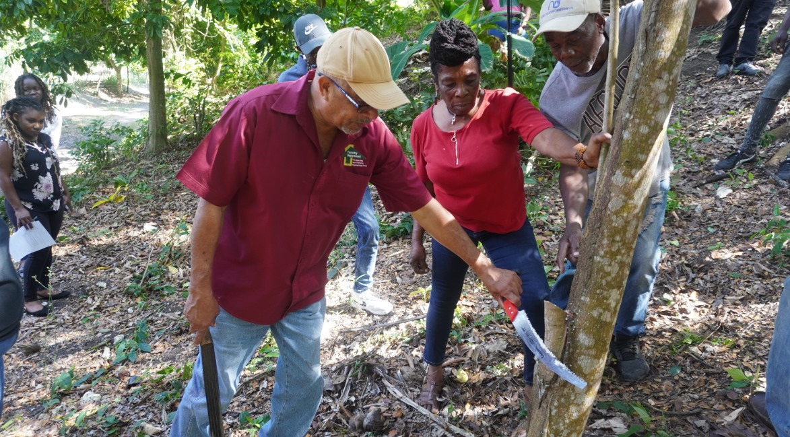

By Forest Commission, April 28 2023
The Forestry Department held its fifth Private Forestry Programme (PFP) Technical Transfer on February 15, 2023 in the North East Region in Annotto Bay, St. Mary. The training made its debut in the 2016/2017 financial year and is usually held once annually in one of the Agency’s regions of operations.
Mrs. Shawnette Russell-Clennon, the Private Forestry Coordinator, gave a background on PFP transfer, commented on the session held recently in the North East Region and briefly commented on the way forward.
Who is the target audience of the PFP transfer?
The target audience for this session is registered PFP planters who plant on a small or large scale, and are willing to participate in the session.
What is the objective of the Private Forestry Programme Technical Transfer?
The main objective of the PFP Technical Transfer session is to share knowledge and transfer technical skills to registered planters who are beginners and those with established plots. The planters will also get the opportunity to share their knowledge with each other based on their individual experiences. This approach will allow each planter to practise information shared and enhance their technical skills to maintain the PFP plots effectively for commercial or conservation purposes.
What were the focus topics of the most recent transfer?
The focus topics were:
How can the target audience benefit from the transfer in short to long-term?
Short-term benifits:
Long-term benefits:
What, if any, are the plans in place to improve the PFP transfer package for the target audience?
The development of a handbook is far-advanced. The handbook will make technical knowledge readily available and reinforce information on topics shared during the technical transfer.
What were some of the needs expressed by the audience during the session and how will the Agency address them overtime?
Senior Management will receive a report on the concerns so tha actions for redress can be incorporated in the Agency’s Corporate and Operational Plans and a strategic approach employed overtime.
When and where will the next transfer be held?
The next session will be held in the 2023/2024 financial year in the South West Region (Western Zone).